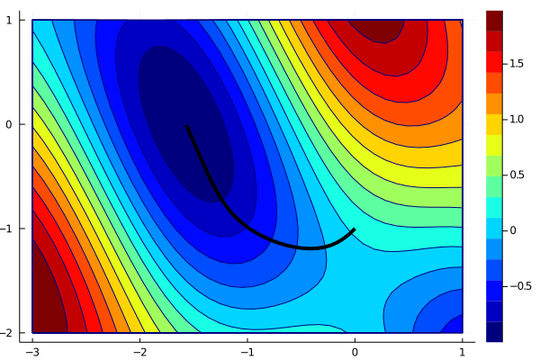
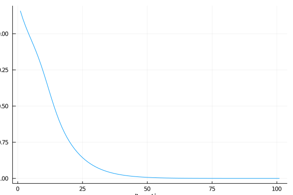
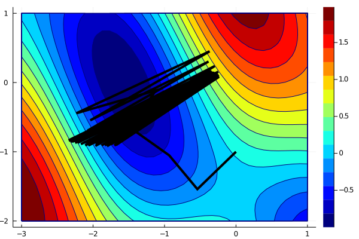

Numerical methods
This part introduces the most basic optimization algorithm called gradient (or steepest) descent.
Gradient descent
We learnt that the gradient is the direction of the steepest descent. The straightforward idea is to move in the opposite direction. This gives rise to the gradient descent algorithm
\[x^{k+1} = x^k - \alpha^k\nabla f(x^k).\]
The stepsize $\alpha^k>0$ can be tuned as a hyperparameter.
Implement function optim which takes function $f$, its gradient g, starting point $x^0$ and fixed stepsize $\alpha$ and runs the gradient descent. It should return first 100 iterations of the algorithm.
This example is rather artificial because often only the last iteration is returned and some stopping criterion is employed instead of the fixed number of iterations.
Solution:
First we need to create an empty array into which we store the iterates. Then at every iteration we compute the gradient g(x), perform the update and save the new value of $x$.
function optim(f, g, x, α; max_iter=100)
xs = zeros(length(x), max_iter+1)
xs[:,1] = x
for i in 1:max_iter
x -= α*g(x)
xs[:,i+1] = x
end
return xs
endNote that the implementation does not use the values of $f$ but only of the gradient $\nabla f$. Moreover, if the algorithm converges $x^k \to \bar x$, then passing the the limit in the gradient update results in $\nabla f(\bar x)=0$. Therefore, as most optimization methods, gradient descent looks for stationary points.
Use the implementation of the gradient descent to minimize the function
\[f(x) = \sin(x_1 + x_2) + \cos(x_1)^2\]
from the starting point $x^0=(0,-1)$ and constant stepsize $\alpha=0.1$. Store all iterations into variable xs.
Plot again the contours pf $f$ and all iterations xs.
Use one line of code to evaluate the function values for all iterations xs (hint: you need to iterate via eachcol(xs) or eachrow(xs) depending on how you repserent xs). Plot these values.
Solution:
We call optim written in the previous exercise. Then we plot the contours as before. Since x_gd[1,:] stores the $x$ coordinate of all iterations and similarly x_gd[2,:], we plot them. Again, we need to use plot! instead of plot to add the line to the contour plot.
x_gd = optim([], g, [0; -1], 0.1)
contourf(xs, ys, f_mod, color = :jet)
plot!(x_gd[1,:], x_gd[2,:], line=(4,:black), label = "")/home/runner/.julia/packages/GR/RlE5Y/src/../deps/gr/bin/gksqt: error while loading shared libraries: libQt5Widgets.so.5: cannot open shared object file: No such file or directory connect: Connection refused GKS: can't connect to GKS socket application GKS: Open failed in routine OPEN_WS GKS: GKS not in proper state. GKS must be either in the state WSOP or WSAC in routine ACTIVATE_WS
This example is similar to [? for h in hs] encountered earlier. To iterate over all columns, we use [? for x in eachcol(x_gd)] and apply f(x) instead of ?. Another way is to iterate over indices instead of vectors and write [f(x_gs[:,i]) for i in 1:size(x_gd,2)].
f_gd = [f(x) for x in eachcol(x_gd)]
plot(f_gd, label="", xlabel="Iteration", ylabel="Function value")/home/runner/.julia/packages/GR/RlE5Y/src/../deps/gr/bin/gksqt: error while loading shared libraries: libQt5Widgets.so.5: cannot open shared object file: No such file or directory connect: Connection refused GKS: can't connect to GKS socket application GKS: Open failed in routine OPEN_WS GKS: GKS not in proper state. GKS must be either in the state WSOP or WSAC in routine ACTIVATE_WS


The convergence looks very nice and the function value decreases. First, the decrease is faster but when the iterations get closer to the minimum, it slows down.
What happens if we choose a different stepsize though? Let us try with two different values. First let us try $\alpha=0.01$.
x_gd = optim([], g, [0; -1], 0.01)
contourf(xs, ys, f_mod, color = :jet)
plot!(x_gd[1,:], x_gd[2,:], line=(4,:black), label = "")/home/runner/.julia/packages/GR/RlE5Y/src/../deps/gr/bin/gksqt: error while loading shared libraries: libQt5Widgets.so.5: cannot open shared object file: No such file or directory connect: Connection refused GKS: can't connect to GKS socket application GKS: Open failed in routine OPEN_WS GKS: GKS not in proper state. GKS must be either in the state WSOP or WSAC in routine ACTIVATE_WS
We see that when the stepsize is reduced, the steps are shorter and we would need to increase the number of iterations (and thus time) to converge. When the stepsize is larger, say $\alpha=1$, the situation is different.
x_gd = optim([], g, [0; -1], 1)
contourf(xs, ys, f_mod, color = :jet)
plot!(x_gd[1,:], x_gd[2,:], line=(4,:black), label = "")/home/runner/.julia/packages/GR/RlE5Y/src/../deps/gr/bin/gksqt: error while loading shared libraries: libQt5Widgets.so.5: cannot open shared object file: No such file or directory connect: Connection refused GKS: can't connect to GKS socket application GKS: Open failed in routine OPEN_WS GKS: GKS not in proper state. GKS must be either in the state WSOP or WSAC in routine ACTIVATE_WS

For a large stepsize, the algorithm gets close to the solution and then starts jumping around. If you further increase the stepsize, it will even diverge to infinite. Try it :)
Adaptive stepsize
To handle this numerical instability, safeguards were introduced. One of the possibilities is the Armijo condition which automatically select the stepsize. It looks for $\alpha^k$ which satisfies
\[f(x^k - \alpha^k\nabla f(x^k)) \le f(x^k) - c \alpha^k \|\nabla f(x^k)\|^2.\]
Here $c\in(0,1)$ is a small contant, usually $c=10^{-4}$. Since the left-hand side is the function value at the new iterate $x^{k+1}$, the Armijo condition ensures that the sequence of function values is strictly decreasing. This prevents oscillations.
The implementation of optim(f, g, x, α; max_iter=100) from the exercise above is rather stupid because it does not allow to modify the selection of the step. The simplest solution to this problem would be to include if conditions inside the function. However, this would result in a long function, which may be difficult to debug and modify. More elegant solution is to create an abstract class
abstract type Step endand for each possible step selection method implement a optim_step method, which selects the step. First, we create the gradeint descent class GD as a subclass of Step by
struct GD <: Step
α::Real
endIt is a structure with parameter α. Then we create the optim_step function by
optim_step(s::GD, f, g, x) = -s.α*g(x)Due to the first input argument, it will be called only for the GD stepsize. To access the parameter α, we need to retrieve it from the structure by s.α. Now we can modify the optim function by
function optim(f, g, x, s::Step; max_iter=100)
for i in 1:max_iter
x += optim_step(s, f, g, x)
end
return x
endNote that the input is s::Step which allows for any subclass of the abstract class Step. Using this implentation results in
gd = GD(0.1)
x_opt = optim(f, g, [-1;0], gd)[-1.570582871855513, -0.0005153258007101915]
We obtained the same results as in the previous case. This is not surprising as the code does exactly the same things; it is only written differently. The next exercise shows the power of defining the Step class.
Implement the Armijo subclass of the Step class. It should have two parameters c from the definition and α_max which will be the initial value of $\alpha$. The value $\alpha$ should be divided by two until the Armijo condition is satisfied.
Then run the optimization with the Armijo selection of the stepsize.
Solution:
We define the class in the same way as with GD
struct Armijo <: Step
c::Real
α_max::Real
endFor the search for the stepsize, we first save the values for the function value $f(x)$ and the gradient $\nabla f(x)$. If we do not do this, it will be recomputed at every step. Then we initialize the value of $\alpha$ and run the while loop until the Armijo condition is satisfied. We added a termination condition (also a safe check) α <= 1e-6 to prevent the loop for continuing indefinitely.
function optim_step(s::Armijo, f, g, x)
fun = f(x)
grad = g(x)
α = s.α_max
while f(x .- α*grad) > fun - s.c*α*(grad'*grad)
α /= 2
if α <= 1e-6
warning("Armijo line search failed.")
break
end
end
return -α*grad
endThen we create the Armijo object and run the optimization again.
gd = Armijo(1e-4, 1)
x_opt = optim(f, g, [-1;0], gd)The correct solution is
[-1.5708, 0.0]